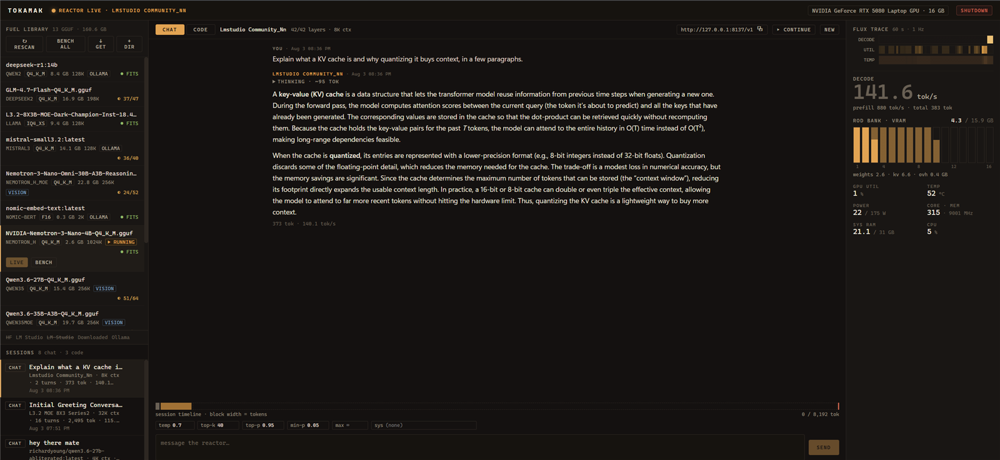
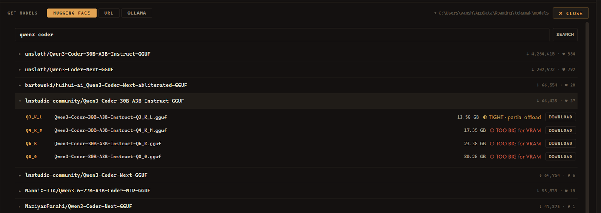
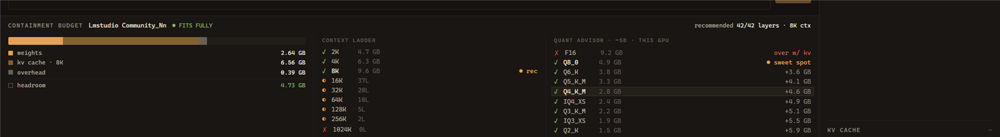

A reactor room
for your local LLMs.
Tokamak finds the GGUF models you already have, works out the best way to run each one on your GPU, launches them through llama.cpp, and turns the whole thing into a live instrument panel.
A tokamak holds a fusion reaction inside a magnetic ring. Roughly the job here: contain a model that wants all of your VRAM, keep it stable, and get useful work out of it. The name also starts with “tok”, the only unit anyone here cares about.

Most local-LLM apps treat
your hardware as a black box.
They will not tell you why a model runs at 4 tok/s instead of 190. They guess at GPU offload settings and never show the math. They cannot tell you which quantization you should have downloaded. Their idea of telemetry is a spinner.
No lock-in
Reads the caches you already have — Hugging Face, LM Studio, Ollama, any folder you add. Plain GGUF files, no proprietary blob store, no re-downloading.
Measure, don’t guess
The estimator predicts what fits; the benchmark then actually runs the model and reports real numbers from your GPU. Arithmetic you can inspect, verified by measurement.
Show everything
If the KV cache is about to overflow, you should see it coming. If half the layers spilled to CPU, the decode-rate cliff should be visible, not mysterious.
An instrument panel,
not a chat box.
Models, with fit shown first

Search the hub from inside the app. Every quant is judged against
your card before a byte moves — so a 17 GB file that will not
fit says so first, not after the download. Resumable, and it lands as
a plain .gguf.
Everything you already have
Scans Hugging Face, LM Studio and Ollama caches plus any folder you add. Parses GGUF headers directly: architecture, quant, native context, attention geometry.
Split shards collapse into one entry; vision projectors attach to their parent.
The quant advisor and context ladder

The VRAM budget split into weights, KV cache, overhead and headroom. A context ladder showing how many layers actually fit at each context size — bigger context costs GPU layers, and the ladder makes that trade explicit instead of leaving you to guess. Then the whole GGUF quant ladder judged against your card, with the sweet spot marked.
Live, at 1 Hz
VRAM as fuel rods, one per GB, segmented into weights and KV. A 60-second flux trace of decode rate, utilization and temperature. At 90% cache fill the trace flips to a red KV pressure alert.
Chat and code, kept apart
Separate transcripts. The agent gets workspace-sandboxed tools — reads run automatically, writes and shell commands stop at an approval card. If the model stops early mid-task it gets pushed to continue rather than quitting silently.
Named, and kept in full
Every turn persisted with content, reasoning, tokens, tok/s, sampler settings and timestamps — named by the model itself. One plain JSON file each: greppable, diffable, portable.
Quantize it, buy context
f16, q8_0 or q4_0 from the status bar, and the estimator costs the cache accordingly so the ladder never promises context the server will not have. Measured: 2.31 GiB saved on a 14B at 32K.
Where Tokamak wins,
and where it doesn’t.
| Tokamak | LM Studio | Ollama | |
|---|---|---|---|
| Fit verdict before download | yes | no | no |
| Shows the VRAM arithmetic | yes | no | no |
| KV cache quantization in the UI | yes | flags | no |
| Live GPU + inference telemetry | yes | partial | no |
| Measured benchmarks in-app | yes | no | no |
| Reads other tools’ caches | HF, LM Studio, Ollama | own + HF | own store |
| Open source | MPL-2.0 | proprietary | MIT |
| macOS / Linux | not yet | yes | yes |
| Signed installer | unsigned | yes | yes |
| Maturity | v0.1 | mature | mature |
Tokamak is v0.1 by one person. It is better than both at explaining your hardware, and worse than both at everything that comes from years of polish and a signing certificate.
Download it and run it.
No Rust, no Node, no toolchain. Installers are built by CI on every tagged version.
Windows installer
Grab the .msi from the latest release and run it. That is
the whole process.
What you also need
An NVIDIA GPU — telemetry and benchmarking use NVML. That is the only hard requirement.
No separate inference runtime to install. On first run Tokamak offers to fetch the right llama.cpp build for your GPU and manages it itself — and uses LM Studio’s binaries automatically if you already have them.
Models are optional too: it reads your existing Hugging Face, LM Studio and Ollama caches, and can download new ones itself.
Windows will warn that the publisher is unknown — the build is unsigned. Choose More info → Run anyway.
Building from source instead
git clone https://github.com/360NoScopeGuru/tokamak cd tokamak npm install npm run tauri dev # development npm run tauri build # release build
Where it’s going.
- SHIPPEDModel library across Hugging Face, LM Studio and Ollama caches, with GGUF parsing and fit verdicts
- SHIPPEDHardware-aware auto-config, context ladder, quant advisor and measured benchmarks
- SHIPPEDLive telemetry cockpit: rod bank, flux trace, KV containment alert
- SHIPPEDChat and agent tabs, sandboxed workspace tools, fully detailed session history
- SHIPPEDIn-app model downloads and a managed llama.cpp runtime
- NOWSpeculative decoding with draft-model suggestions and a live accept-rate graph
- NEXTConversation branching — fork at any message, compare branches side by side
- LATERLoRA hot-swap, multi-GPU tensor-parallel control, local quant conversion
Built to be inspected.
| Shell | Tauri 2 — Rust backend, React + TypeScript frontend, no Electron |
| Inference | llama.cpp llama-server, managed as a child process with health probing |
| Model metadata | GGUF v2/v3 header parser written from scratch in Rust |
| Telemetry | NVML for GPU, llama-server’s Prometheus /metrics for inference |
| Storage | Plain JSON — settings and one file per session. Nothing proprietary |
| Agent sandbox | Lexical + canonical path checks in Rust, unit tested against traversal |